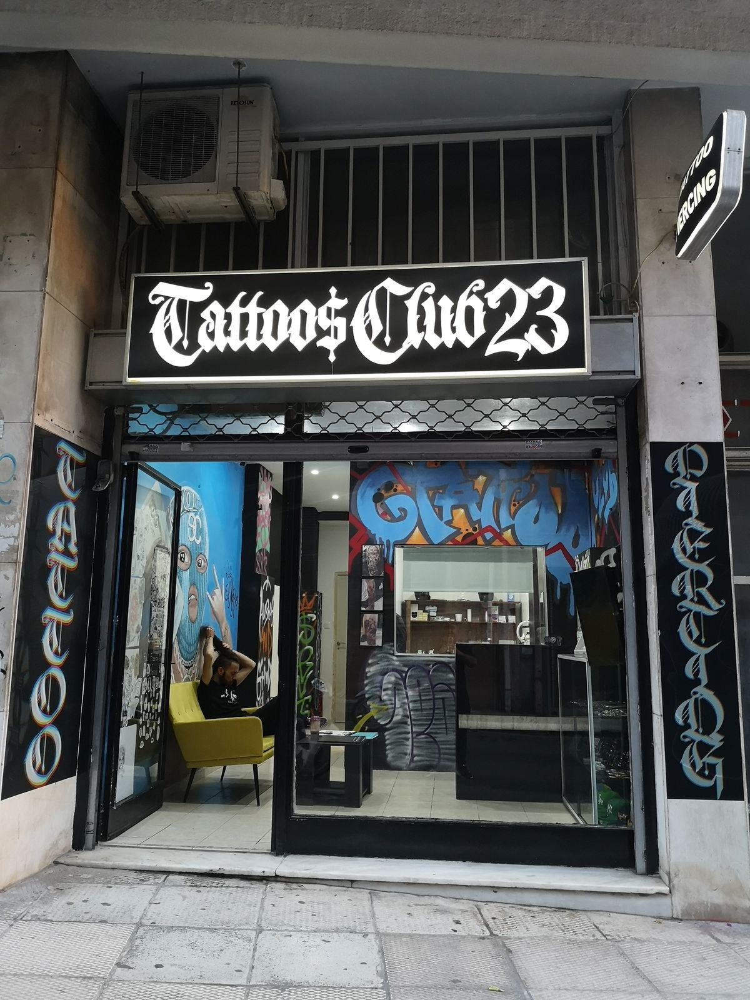

Rico Duarte
Blackwork & Old School:
Combina o traço grosso e os temas clássicos do estilo tradicional com o uso exclusivo de tinta preta e sombras sólidas.

Estúdio autoral · Brasília-DF
Um espaço dedicado à tatuagem autoral, com técnica apurada, ambiente acolhedor e atenção total ao seu cuidado do início ao fim do processo.
Sobre o estúdio
Reunimos artistas de estilos diferentes em um único espaço pensado para transformar a experiência de se tatuar: ambiente limpo, material esterilizado individualmente e um atendimento que começa muito antes da agulha tocar a pele.
Cada sessão é conduzida com calma, respeitando o tempo do cliente e o cuidado necessário para transformar uma ideia em uma tatuagem que realmente faça sentido para você.
Conheça os artistasO espaço
Um ambiente pensado para que sua experiência seja confortável, segura e totalmente sua desde o primeiro contato.
Trabalhamos com atendimento personalizado, materiais descartáveis e uma estrutura preparada para transformar ideias em tatuagens.
Agendar uma sessãoNossa equipe
Estilos diferentes, o mesmo compromisso com técnica e cuidado. Conheça quem vai transformar sua ideia em tatuagem.
Blackwork & Old School:
Combina o traço grosso e os temas clássicos do estilo tradicional com o uso exclusivo de tinta preta e sombras sólidas.
Fine Line & Botânico:
Combina traços finos e delicados com elementos da natureza, como flores, folhas e ramos.
Realismo & Retrato:
Técnica artística avançada que busca reproduzir fotografias na pele com o máximo de fidelidade, profundidade e precisão.
Autoral & Ilustrativo:
Desenho exclusivo criado do zero pelo artista especificamente para você, com forte apelo artístico e visual de ilustração.
Portfólio
Contrastes marcantes, preto sólido, símbolos clássicos e composições com personalidade.
Portfólio
União de delicadeza técnica e temática natural.
Portfólio
Busca por reproduzir fielmente uma imagem real na pele, com foco em capturar feições, expressão e identidade.
Portfólio
Obras exclusivas criadas do zero pelo tatuador para se adaptar perfeitamente ao corpo de cada cliente.
Dúvidas frequentes
Perguntas que a gente mais recebe antes de uma sessão.
Existe desconforto, que varia de pessoa para pessoa e conforme a região do corpo. Nossa equipe explica todo o processo antes de começar para reduzir a ansiedade.
O tempo médio de cicatrização visível é de 2 a 4 semanas, variando conforme o tamanho, a região tatuada e os cuidados seguidos no pós-tatuagem.
Sim. Para projetos personalizados, fazemos uma conversa inicial para entender referência, tamanho e local do corpo antes de fechar valor e data.
Aceitamos Pix, cartão de débito e crédito, com parcelamento disponível para sessões de maior valor.
Depoimentos
Veja o que nossos clientes dizem.
“Estúdio maneiro. Ambiente limpo, artista super atencioso e o resultado ficou exatamente como eu queria.”
— Marcela T.“Já fiz duas tatuagens aqui e, nas duas vezes, fui muito bem atendida, desde o orçamento até a cicatrização.”
— Felipe A.“Recomendo demais. Profissionais atenciosos e um cuidado com biossegurança que me deixou bem mais tranquila.”
— Duda S.Onde estamos
Venha nos visitar.
Contato
Conte sua ideia e agende uma avaliação sem compromisso.